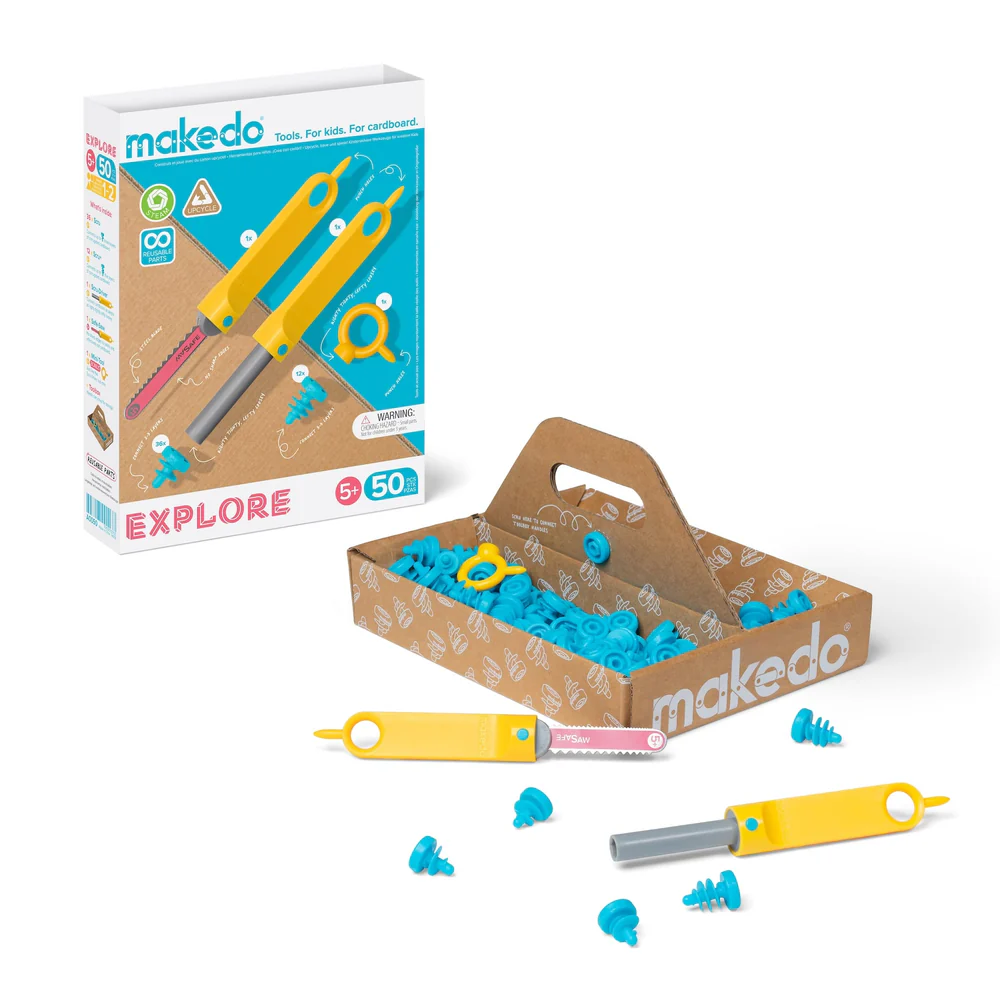
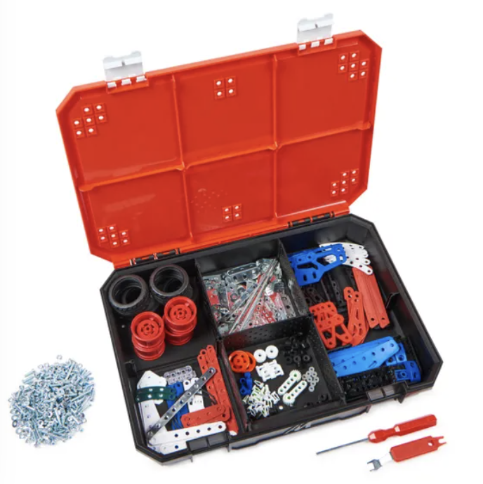

Hands-on Tinkering and Tinkerability criteria
This post contains my findings on the tinkerability of the Makedo, littleBits, and Meccano tinkering materials. These materials are reviewed from the tinkerability viewpoints of preciousness, interoperability, self-guiding, level of instruction (skills, tools) needed, collaboratability and sensory engagement.
Makedo
littleBits

Meccano
| Criteria | Makedo | littleBits | Meccano |
|---|---|---|---|
| Preciousness | The main material used, cardboard, is not precious at all and can be cut, ripped, modified, destroyed in any way imaginable without the kit losing any inherent value. The screws are single-piece parts that will possibly lose their purpose of connecting cardboard if modified. | Sophisticated circuit pieces will lose all of their value if they are modified in a way that breaks their electrical functionality. At that point, they serve no purpose in the kit. | These metal pieces and screws hold little inherent preciousness and could be cut and bent in different ways so that they can still be connected together. Some special parts such as wheels and screws could lose preciousness if altered in a destructive way. |
| Interoperability | Very interoperable as the main part of the kit is mostly plastic screws. There is no inherent requirement to use cardboard with the screws. | Could be interoperable with other electronics if the wires in the building blocks were to be exposed. | Very interoperable with other kinds of tinkering materials. Especially if used together with screws in which case the materials could be attached to other kinds of materials. |
| Self-Guiding | This set does not require any outside guidance. The user is free to provide the main cardboard materials themselves and cut them into shape, connecting them with screws in any way possible. | With common knowledge on circuits, this kit can be used without much guidance. However, the kit also feels the need to provide some example circuits to build. | The maker kit allows for a lot of self-guidance since it provides no instructions and the pieces can be connected in almost any way imaginable. It is up to the user to decide how they build. |
| Level of Instruction (Skills, Tools) Needed | The kit requires only a basic cardboard knife, a screwdriver, and the basic skill to use them. It is thus suitable for kids, too. | This kit requires a bit more understanding of how circuits work, although this is made easier by not exposing the wires and instead using magnets for connecting the circuit pieces. Tools are not required. | This kit requires a basic screwdriver and the skill of using that to connect pieces, nothing else. |
| Collaboratability | This kit can easily be used simultaneously with multiple people since the scale of building is quite large. It is probably thus easier to work on different parts of the build by separate people, combining the build at the end. | More difficult for multiple people to work with simultaneously due to the small size of the kit elements. People will often get in each other’s way if they try to tinker at the same time. | Again, these pieces are quite small, so multiple people working on the same project might prove more difficult. These are easier to work with in parallel compared to littleBits. |
| Sensory Engagement | This kit only really activates visual senses and not even those as much since, unless painted, the cardboard might not be visually too rich. | This kit engages the most senses with its various sensors and outputs, including speakers, microphones, light sensors, and light outputs. These can be connected to activate simultaneously. | This kit engages mostly visual and perhaps haptic senses if more intricate mechanisms and special pieces are used. |